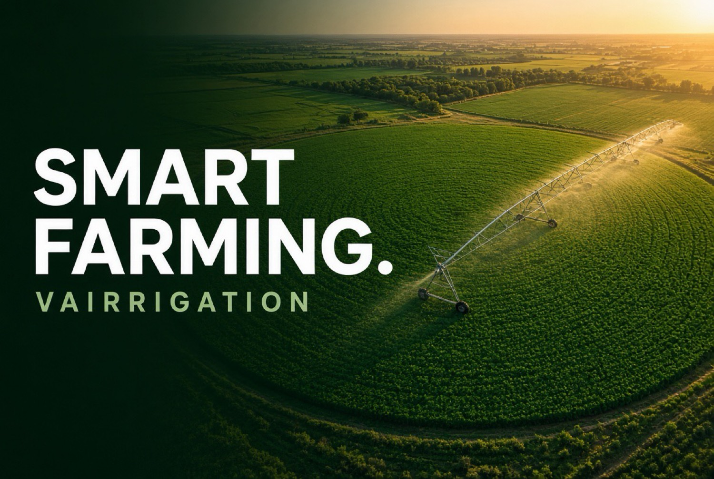
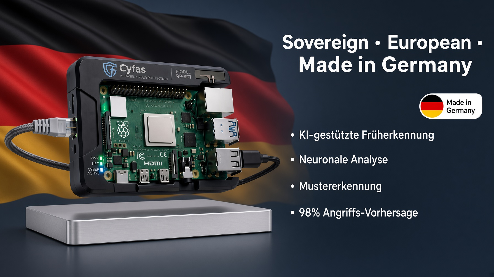
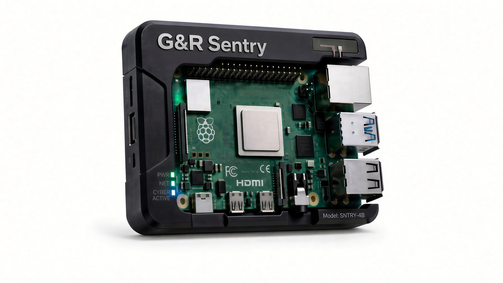
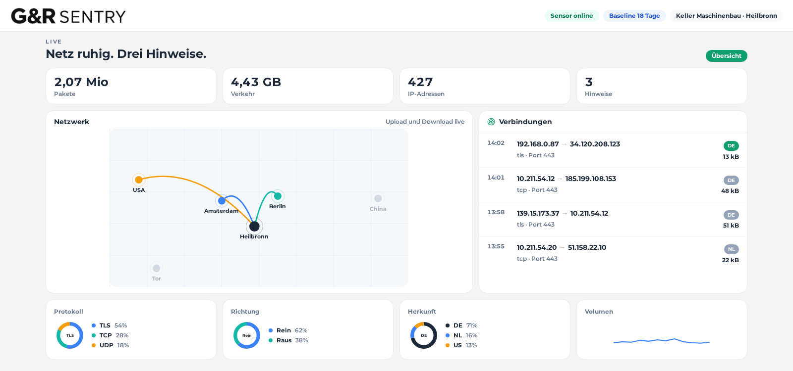

G&R GROUP · MADE IN GERMANY
Vier Disziplinen.
Eine Holding.
G&R Group bündelt Smart Farming, souveräne Cybersecurity, Legal-Tech-Compliance und ein KI-Betriebssystem für Versicherungen. Jeweils ein eigenes Produkt, gemeinsam gedacht.
Produkte ansehenGESCHÄFTSFELDER
Was G&R Group baut
Vier Marken unter einem Dach. Gleiche Haltung: vor Ort verständlich, europäisch und ohne Konzern-IT nutzbar.

Smart Farming
Vairrigation – präzise Bewässerung und digitale Feldwirtschaft.
Cybersecurity
G&R Sentry – KI-gestützte Intrusion Detection im eigenen Netz.

Compliance
Legal Tech für GDPR, NIS2 und nachvollziehbare Prüfpfade.

AI Operating System
Arbeitsflächen für Portfolio, Schaden, Risiko und Bestand.
SMART FARMING
Vairrigation
Digitale Feldwirtschaft mit Fokus auf Wasser, Fläche und Ertrag. Landwirtschaft bei Licht, nicht im Rechenzentrum.

CYBERSECURITY · G&R SENTRY
Intrusion Detection im eigenen Netz
KI-Frühwarnung für Betriebe vor Ort. Hardware im Haus, ohne Pflicht zur Cloud. Erkennt Portscans, Anomalien, Tunnel, Botnetze, Geofencing und Tor.


COMPLIANCE · LEGAL TECH
Gesetze als Arbeitsfläche
Helles Legal-Tech-Produkt für Prüfungen statt Aktenberge. GDPR- und NIS2-Status, Dokumente und Nachweis in einem Blick.
ARTIFICIAL INTELLIGENCE
Operating System für Versicherungen
Ein Betriebssystem für Portfolio, Schaden, Risiko und Bestand. Arbeitsflächen, die ein Versicherer täglich öffnet.
Zur Produktseite


KONTAKT
Welches Feld zuerst?
Farming, G&R Sentry, Compliance oder das Versicherungs-OS. Wir zeigen die Lösung am Betrieb, nicht nur auf dem Bildschirm.